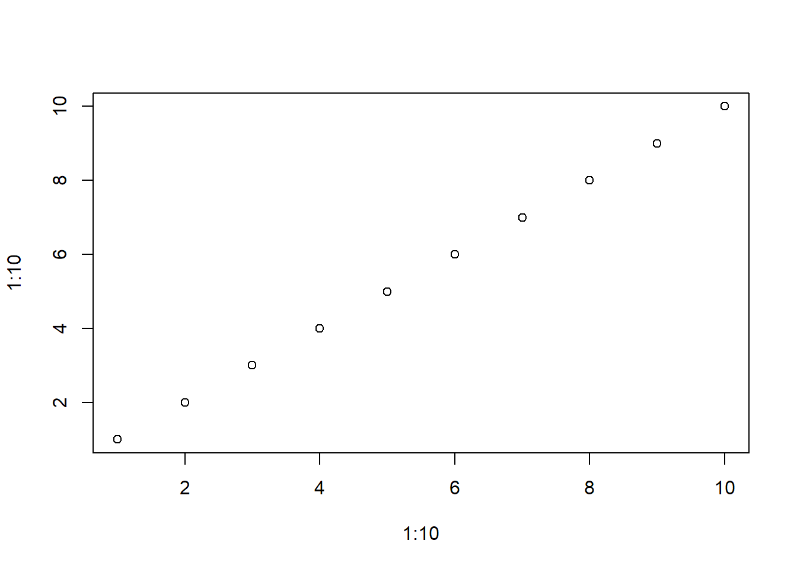

Test other sticky block types
First paragraph.
This is a para nested in a div. These two first bits don’t trigger anything…
This is an image with the sticky tag on the div.
This is an image with the sticky tag on Image itself.
I’ve replaced its margin with some padding to demonstrate that you can give it a larger “surface” area on which to trigger scroll events.
x

Here’s a little non-scrolling interlude before our next scrolly section!